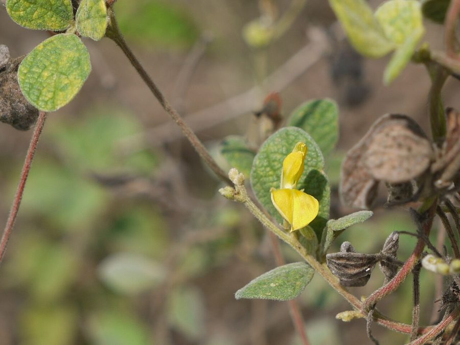

वाइल्ड पिजन पीWild Pigeon Pea
Cajanus scarabaeoides · Fabaceae · FLR-0419

- Scientific name वैज्ञानिक नाम
- Cajanus scarabaeoides (L.) Thouars
- Family कुल
- Fabaceae
- Hindi हिंदी
- वाइल्ड पिजन पी
- Local names स्थानीय नाम
- wild pigeon pea
- Status here यहाँ की स्थिति
- native
- Movement आवागमन
- Resident, here all year
- Known from कहाँ दर्ज
- Others have published records from the wider Awadh–Purvanchal plain, none yet from Basti–Ayodhya अवध–पूर्वांचल से दूसरों के प्रकाशित अभिलेख, बस्ती–अयोध्या से अभी नहीं
- IUCN IUCN
- LC
- Review समीक्षा
- not yet reviewed
When to look कब देखें
Expected mainly in January, February, March, August, September, October, November, December. मुख्यतः जनवरी, फ़रवरी, मार्च, अगस्त, सितंबर, अक्टूबर, नवंबर, दिसंबर में अपेक्षित।
Uses and possibilities उपयोग और संभावनाएँ
“Traditional medicine” means a documented traditional use, not a claim that it works. Nothing on this page is medical advice.
Drawn from the documented uses in the profile below, where each is labelled traditional, current or a research lead. All uses →
Tell it apart from इनसे अलग पहचानें
वाइल्ड पिजन पी / Wild Pigeon Pea
Cajanus scarabaeoides (L.) Thouars — Fabaceae
वाइल्ड पिजन पी — जिसे बन अरहर या जंगली अरहर भी कहा जाता है, यह खेतों की मेड़ों, सूखी घासों और झाड़ियों पर फैलने वाली एक छोटी रोयेंदार जंगली दलहनी बेल है। इसकी पत्तियाँ अरहर की तरह तीन हिस्सों में बंटी होती हैं और उन पर मखमली रोआं होता है। इसके छोटे पीले मटर जैसे फूल खिलते हैं और फलियां छोटी, चपटी और गहरी धारियों वाली होती हैं जो पकने पर भूरी-काली हो जाती हैं।
Quick Identification त्वरित पहचान
| Feature | Description |
|---|---|
| Plant habit | Slender, trailing or twining perennial herbaceous legume covered in soft grey down |
| Stems | Much-branched from the base, wiry, densely clothed with short grey or brownish tomentum |
| Leaves | Trifoliolate; leaflets obovate-oblong, obtuse, thick, softly pubescent, gland-dotted beneath |
| Inflorescence | Short axillary racemes on slender peduncles bearing few small yellow flowers |
| Corolla | Papilionaceous, bright yellow, standard petal veined or flushed with red or purple |
| Fruit | Small, oblong, flat, woody pod with distinct transverse furrows between seeds |
Field tip: Look for a trailing wiry vine with softly velvety trifoliolate leaves resembling miniature pigeon pea, bearing small yellow pea flowers and furrowed pods.
हिंदी: अरहर जैसी तीन मखमली पत्तियाँ, छोटे पीले फूल और बीच से खांच वाली छोटी फलियां देखकर इसे पहचानें।
Morphology आकारिकी
Measurement not available in consulted sources.
A slender, twining or prostrate perennial herbaceous legume. Taproot woody, branched, bearing numerous small spherical nitrogen-fixing bacterial nodules. Stems slender, wiry, much-branched from the base, trailing across open ground or climbing over low bushes, densely clothed with short, soft, grey or fulvous tomentum.
Leaves alternate, pinnately trifoliolate; petiole slender, tomentose; leaflets obovate, elliptic or oblong, obtuse or rounded at the apex, cuneate at the base, entire, thick, soft, three-nerved from the base, grey-pubescent on both surfaces, lower surface conspicuously dotted with microscopic golden-yellow resinous glands; stipules small, lanceolate, hairy.
Inflorescence consisting of short, condensed, axillary racemes or clusters on short hairy peduncles, carrying few flowers. Calyx campanulate, deeply five-lobed, densely grey-silky; teeth linear-subulate, longer than the tube. Corolla papilionaceous, bright yellow; standard petal broad, orbicular, auricled at the base, finely veined or flushed with brownish-red on the back; wings narrow; keel incurved, obtuse.
Fruit an oblong, flat, compressed pod (legume), straight, densely clothed with soft spreading brownish or greyish hairs, marked with distinct, deep, oblique transverse depressions or furrows between the seeds, tipped with the persistent base of the style. Seeds three to six per pod, small, oblong or subglobose, compressed, dark brownish-black, equipped with a prominent grooved waxy strophiole (aril).
हिंदी: पौधा जमीन पर रेंगता या झाड़ियों पर चढ़ता है। तीन पत्तियों का समूह होता है जिन पर मुलायम रोयें होते हैं। फूल चमकीले पीले होते हैं। फलियां छोटी, चपटी और बीजों के बीच गहरी खांच वाली होती हैं।
Behaviour & Ecology व्यवहार और पारिस्थितिकी
A native, drought-hardy wild legume widespread in open grasslands, dry deciduous scrub, field bunds, and sandy alluvial terraces across South Asia. It is an important wild progenitor and close relative of the cultivated pigeon pea (Cajanus cajan).
The plant fixes atmospheric nitrogen via root nodule symbioses, enriching dry sandy soils. Its golden resinous glands and dense velvety hairs provide protection against intense heat and desiccation. When ripe, the dry pods split open elastically, while the strophiolate seeds are occasionally collected and dispersed by ground-foraging ants.
हिंदी: यह पौधा अरहर का जंगली रिश्तेदार है और सूखी मिट्टी में नाइट्रोजन बढ़ाकर उसे उपजाऊ बनाता है। पत्तों के रोयें इसे तेज धूप और सूखे से बचाते हैं।
Life Cycle / Phenology जीवन चक्र
Shoots sprout and elongate rapidly with the first substantial rains of the monsoon in July and August. Branches spread over grass and low scrub through September.
Flowering begins in August and continues through the post-monsoon and winter months until February and March. Small yellow flowers open on sunny mornings. Furrowed hairy pods ripen from October to April, persisting on the dry vines. During the severe dry heat of May and June, the above-ground stems desiccate and wither, but the woody perennial rootstock survives dormant in the soil to re-sprout with the subsequent rains.
हिंदी: जुलाई-अगस्त में नए कल्ले फूटते हैं। अगस्त से मार्च तक फूल और फल आते हैं। भीषण गर्मी में ऊपर का हिस्सा सूख जाता है पर जड़ें सुरक्षित रहती हैं।
Associated Species / Interactions सहजीवी प्रजातियाँ
The yellow pea flowers are pollinated by small leafcutter bees, solitary halictid bees, and honeybees.
Frequently grows alongside other wild legumes and climbers such as phasey bean (Macroptilium lathyroides), sarphonka (Tephrosia purpurea), and alyce clover (Alysicarpus vaginalis).
हिंदी: इसके फूलों पर छोटी मधुमक्खियाँ आती हैं। यह अन्य जंगली दलहनी पौधों के साथ उगता है।
Pests and Diseases कीट और रोग
Pod-boring caterpillars (Helicoverpa and Maruca) occasionally attack green pods, while aphids colonize young shoot tips during humid post-monsoon weather.
हिंदी: कभी-कभी फलियों में छेद करने वाले कीड़े लग जाते हैं और कोमल डालियों पर माहू कीट दिखते हैं।
Agricultural / Human Relevance कृषि प्रासंगिकता
In the agro-ecosystems of eastern Uttar Pradesh, wild pigeon pea is a wild relative of the cultivated pigeon pea (Cajanus cajan).
Chopra et al. (1956, p. 30, as Atylosia scarabaeoides) record that the plant is used for diarrhea in cattle. This is a record of published traditional use, not medical advice.
हिंदी: यह खेती वाली अरहर की एक जंगली संबंधी प्रजाति है। चोपड़ा और साथियों (1956) के अनुसार यह पौधा मवेशियों के दस्त में दिया जाता है।
Expected Locally स्थानीय रूप से अपेक्षित
Not a field record. Written from published accounts for eastern Uttar Pradesh. No confirmed local sighting yet — if you have seen it, that is what the atlas needs.
अभी तक स्थानीय पुष्टि नहीं। यह विवरण प्रकाशित स्रोतों से है, किसी अवलोकन से नहीं।
Expected on dry field borders, canal embankments, open grassy wastelands, and sandy river bluffs across Basti, Ayodhya, and neighbouring districts from August through March. GBIF holds published records from the wider Awadh–Purvanchal plain, none yet from Basti–Ayodhya. The first verifiable record from the region will be a dated photograph of flowering plants or a population in a weed habitat or field border with district and coordinates.
हिंदी: बस्ती और अयोध्या में खेतों की सूखी मेड़ों, नहर की पटरियों और रेतीले कछारों पर बरसात और सर्दियों में इसे देखा जा सकता है।
Distribution वितरण
Global range: Native across South Asia, Southeast Asia, southern China, and northern Australia; widely distributed in the Old World tropics.
In India: Widespread across the plains and hills throughout India, from the Himalayas to the southern tip of the peninsula.
In Uttar Pradesh: Distributed across the dry deciduous belts, open grasslands, and river basins across central and eastern districts.
In Basti district / eastern UP: Expected on sandy loams, dry field boundaries, and scrub wastelands.
हिंदी: यह पौधा भारत, दक्षिण-पूर्व एशिया और ऑस्ट्रेलिया के गर्म मैदानी व जंगली इलाकों में पाया जाता है।
Research Questions शोध प्रश्न
- What pod-borer resistance traits present in this wild species can be transferred to local cultivated pigeon pea varieties?
- How does the nitrogen-fixing capacity of this wild legume compare with cultivated Cajanus cajan under drought stress?
- Which native bee species are the most frequent visitors and pollinators of the small yellow flowers? / इसके छोटे पीले फूलों पर कौन सी देशी मधुमक्खियाँ सबसे ज्यादा परागण करती हैं?
- What is the role of the prominent seed strophiole in attracting seed-dispersing ants in dry scrub soils? / सूखे मैदानों में चींटियों को आकर्षित करने में इसके बीज के उभार की क्या भूमिका है?
- Can a school child compare the velvety three-parted leaf of this wild vine with the leaf of a cultivated pigeon pea plant?
हिंदी: क्या इस जंगली अरहर के गुणों का उपयोग असली अरहर की फसल को कीड़ों से बचाने के लिए किया जा सकता है?
Similar Species मिलती-जुलती प्रजातियाँ
| Species | How to tell apart | हिंदी | |
|---|---|---|---|
| `[[pigeon_pea\ | Cajanus cajan]]` | Large erect woody shrub; leaflets larger, acute; pods larger, cultivated crop | बड़ा सीधा झाड़ीदार पौधा, पत्तियाँ बड़ी और फलियां खेती की अरहर जैसी होती हैं |
| `[[phasey_bean\ | Macroptilium lathyroides]]` | Erect or twining herb; flowers dark maroon-red; pods very slender, cylindrical, twisting spirally | फूल गहरे लाल-मैरून और फलियां बहुत लंबी, पतली और ऐंठने वाली होती हैं |
Field rule: Look for the trailing or climbing habit, velvety trifoliolate leaves, small yellow flowers with red-veined standard, and flat hairy pods with deep transverse furrows.
हिंदी: जमीन पर रेंगती हुई बेल, मखमली तीन पत्तियाँ, पीले फूल और गहरी खांच वाली छोटी रोयेंदार फलियां इसकी पहचान हैं।
Taxonomy & Classification वर्गीकरण
Original description. First described as Dolichos scarabaeoides by Carl Linnaeus in 1753 in Species Plantarum, volume 2, page 726. Transferred to Cajanus by Louis-Marie Aubert du Petit-Thouars in 1817 in Cuvier's Dictionnaire des Sciences Naturelles, edition 2, volume 6, page 167.
Subspecies. Long treated in Indian floras under the synonym Atylosia scarabaeoides (L.) Benth. (Bentham 1852; Duthie 1903; Hooker 1876). Current botanical consensus unites Atylosia with Cajanus.
Family and order placement. Placed in family Fabaceae (subfamily Faboideae, tribe Phaseoleae), order Fabales.
Phylogenetic notes. Cajanus scarabaeoides is placed in the tertiary gene pool of cultivated pigeon pea (Cajanus cajan).
IUCN status rationale. Assessed as Least Concern (LC) on the IUCN Red List due to its immense geographical distribution, abundance across diverse habitats, and stable populations.
हिंदी: यह मटर कुल (फैबेसी) का पौधा है। लिनियस के 1753 के नाम को दु पेतित-थुआर्स ने कजानस में रखा था। आईयूसीएन ने इसे संकटमुक्त माना है।
Photo Gallery फोटो गैलरी
No photos yet — add field photos to media/species/wild_pigeon_pea/ and run node scripts/sync_photos.js.
Photos needed आवश्यक फोटो
- [ ] Velvety trifoliolate leaves showing golden gland dots below (तीन मखमली पत्तियाँ)
- [ ] Axillary cluster of small yellow pea flowers (छोटे पीले फूलों का गुच्छा)
- [ ] Flat hairy pods with deep transverse furrows (खांचदार रोयेंदार फलियां)
References संदर्भ
- Linnaeus, C. (1753). Species Plantarum, vol. 2, p. 726.
- Bentham, G. (1852). In Miquel, Plantae Junghuhnianae, p. 242. (as Atylosia scarabaeoides)
- Duthie, J. F. (1903). Flora of the Upper Gangetic Plain and of the Adjacent Siwalik and Sub-Himalayan Tracts, vol. 1, part 1, p. 213. (as Atylosia scarabaeoides)
- Hooker, J. D. (1876). The Flora of British India, vol. 2, p. 215. (as Atylosia scarabaeoides)
- Chopra, R. N., Nayar, S. L. & Chopra, I. C. (1956). Glossary of Indian Medicinal Plants, Council of Scientific and Industrial Research, New Delhi, p. 30.
- IUCN (2012). Cajanus scarabaeoides: Chadburn, H. The IUCN Red List of Threatened Species, 2012. doi:10.2305/iucn.uk.2012.rlts.t19892765a20032501.en.
- GBIF Occurrence Data — Cajanus scarabaeoides, India (2025).
Source file: species/flora/weeds/wild_pigeon_pea.md